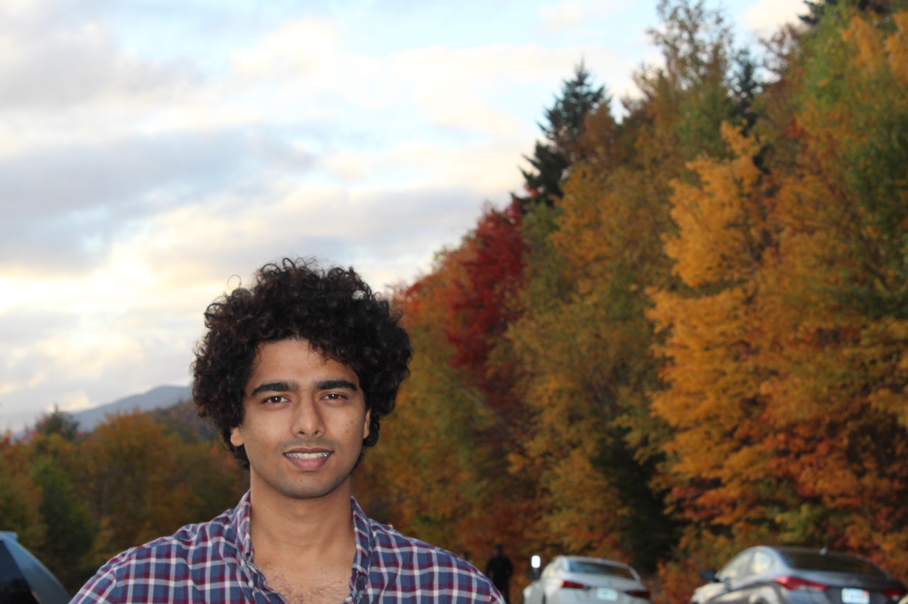

Hello! My name is Surya Teja Eada (you can also call me Sunny). I am a statistician with a background in Stochastic Processes, Hidden Markov Models, and an ever growing interest to understand other complex phenomena through statistical modeling.
My academic background is
Beyond academics, I enjoy traveling, hiking, playing sports, and painting. I also value community engagement and participating in volunteer activities.